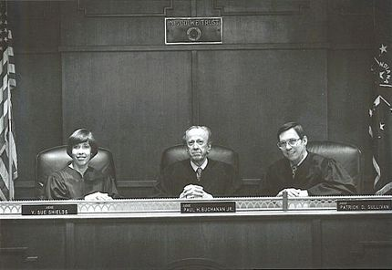
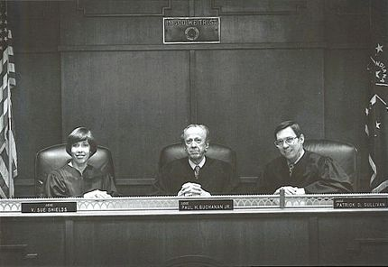

THE 3-JUDGE PANELS
The court considers cases in three-judge panels that have
statewide jurisdiction and rotate three times per year. The
three-judge panel system has been in effect in Indiana since
1972 and is consistent with the standard adopted by the
American Bar Association. Since 1998, the three-judge
panels have been formed according to a mathematical
formula ("Kirkman's Schoolgirl Problem Solution") that allows
randomly assigned panels of diverse membership.
The underlying rationale for panels of three is that cases
should be resolved by a collective judicial judgment so that
appeals are more than substituting the decision of a single
appellate judge for that of a single trial judge.
There is no deadline for the court to reach its decisions;
however, the court strives to issue decisions within four
months of receiving an appeal, and often issues decisions
before the self-imposed deadline.
For more detailed information pertaining to the 3 Judge Panel,
visit our website at: www.in.gov/judiciary/appeals
 
